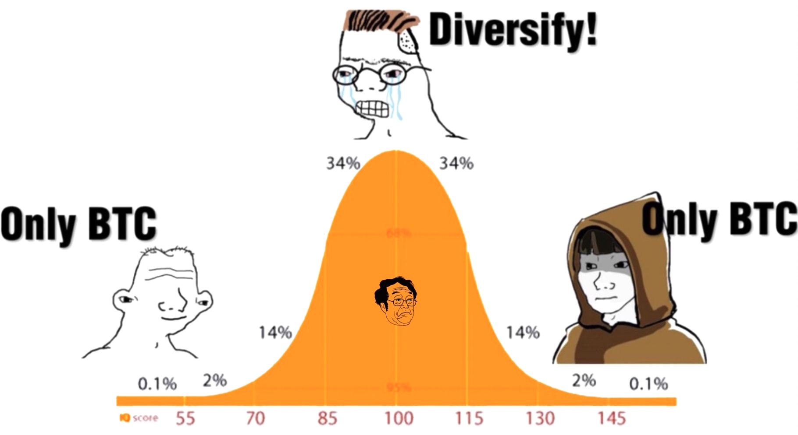
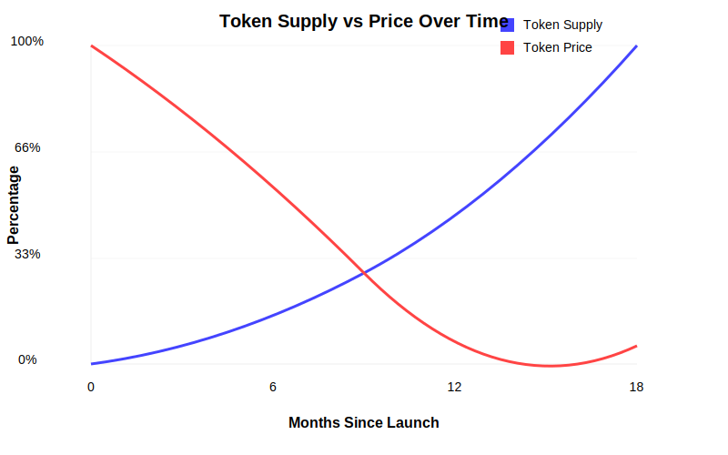

Mid Brain

While this section will probably be the most fun to write, it will result in unbounded destruction.
Let the fun begin!
Shit Coins
DeFi truly started on Ethereum in DeFi Summer 2020.
Some pedants will argue it started in 2016, with the launch of EtherDelta and the 2017 ICO boom where it handled about 10% of all Ethereum token trading volume. But degen DeFi started in 2020 with the most degen of crazes. Food tokens and farming.
Meme coins had started in 2013 with Doge. However in the early days even the worst shit coins had to have a network. So even the scammers needed to have enough technical proficiency to create a network to issue a token to scam you. That changed with the advent of the ERC20 token standard on Ethereum in late 2015. Now scammers and purveyors of shit coins could just copy and paste some code and voila, shit coin!
Scammers everywhere rejoiced.
In 2020 when DeFi Summer started kicking off, we got a flood of that special brand of shit coin, the Governance token. We can probably blame MakerDAO for this atrocity, with the introduction of “Liquidity Mining” or “Yield Farming”. You see, shit coin creators crave liquidity above all else. Without liquidity, they cannot dump on the market. Without liquidity, you cannot manipulate the market to think your shit coin is worth billions. Traditionally shit coin creators had to go to CEX’s to get liquidity. The problem is CEX’s are just as, if not more, crooked than shit coin creators. CEX’s charge astronomical prices to list. And then they dump on the market before the shit coin creator can. For a great case study see how $GALA shat the bed after getting listed on that dodgiest of the dodge, FTX.
So Yield Farming allowed shit coin creators a new way to gain liquidity and if anything better PsyOps for dumping on mid brains. What you do is, you create your shit coin, with a massive supply, think billions. Then you allocate 10% of this token supply for Yield Farming. Now liquidity on CEX’s are provided by mature market makers. Retail is excluded as they’re not mature enough or have the resources to provide market making services. So since Uniswap provided an easy way for retail (read marks) to provide liquidity, you could offer these gullible people rewards for providing liquidity. So let’s say you put in $10 of liquidity, you’d offer these users $10 a month in Yield Farming rewards for that liquidity. Easy money for the mark. Except that $10 a month is in the shit coin. Shit coin creator gets liquidity so they can dump their allocation into Stables or a blue chip Coin. Farming Yields go to shit. YOU get rekt. Unlucky.

So now we have all the ingredients for a Yield Farming.
- A plethora of shit coins, masquerading as Governance tokens
- A mature trading environment facilitated by Uniswap’s innovation in the AMM space
- An unsuspecting market of victims easily lured by promises of huge profits
Welcome to DeFi Summer 2020.
There were also some cool examples of Vampire Attacks. Or more broadly, a protocol ripping off the source code of a naive project, wrapping a token around their stolen work and trying to unfairly profit. How very James Taggart of them.
So first lesson, we don’t deal with shit coins. Or if we’re forced to, it’s because there’s enough zealots around it that the market is being stupendously foolish and we can profit from their idiocy.
Be fearful when others are greedy, and greedy when others are fearful - Warren Buffet
I really should try categorize shit coins. This is tough to do.
“I shall not today attempt further to define the kinds of material I understand to be embraced within that shorthand description [of pornography]; and perhaps I could never succeed in intelligibly doing so. But I know it when I see it, and the motion picture involved in this case is not that.” - Supreme Court Justice Potter Steward’s ruling on Porn
Just like old mate Potter, I don’t think I can define a shit coin, but I know it when I see it. The only way you’ll be able to get that level of maturity is time in the market. Your battle scars will be your wisdom in years to come.
Notification System
Since we’re going to be playing with the sharks, we’re going to need protection. This is where alerts come into it.
Being good at DeFi is being able to remain emotionless. Being online 24/7 during bull markets is going to make you stupid, strung out and will ensure your strategies are riddled with mistakes. Being a balanced person will make you way more money than some sleep deprived, Twitter obsessed doos. Let the machines work for you.
So we need a good notification system. We can use:
- Tenderly Web3 Actions, or
- OpenZeppelin Defender Sentinels
We’ll use Tenderly’s Web3 actions as they’re more flexible and powerful. Since we’ll be using Ethena’s USDe quite alot through this strategies it’s important that if it shits the bed, we can get out quickly before losing everything. As an example UST on May 10th 2022 from holding it’s dollar peg to losing half it’s value in about 38 hours. So if USDe loses more than 10%, we must assume a death spiral and get our money out.
{kind=link}
So what we want to do is to go to CoinGecko and find the biggest amount of on chain liquidity for USDe. So find USDe and then go to Markets to find the on DEX with the biggest depth. Currently that’s Uniswap V3 with a USDE/USDT pool on Ethereum. https://app.uniswap.org/explore/pools/ethereum/0x435664008F38B0650fBC1C9fc971D0A3Bc2f1e47
So we can set a notification for event emitted in Tenderly through the UI. However this doesn’t give us the exchange rate. So it’s good enough for now, but we’ll eventually revise this to have common notifications that will apply across all our strategies.